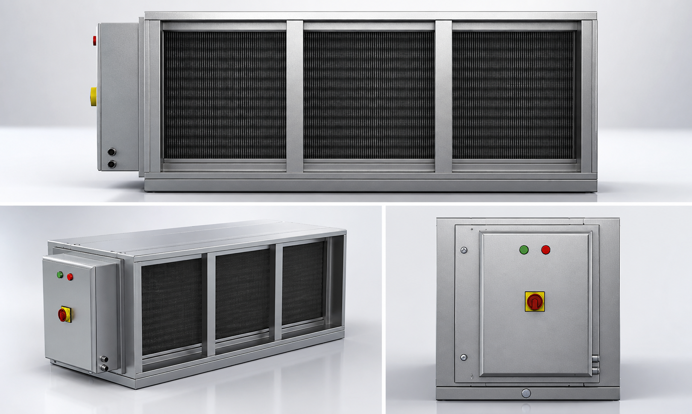
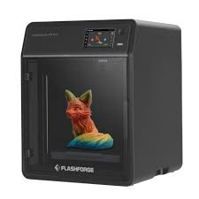
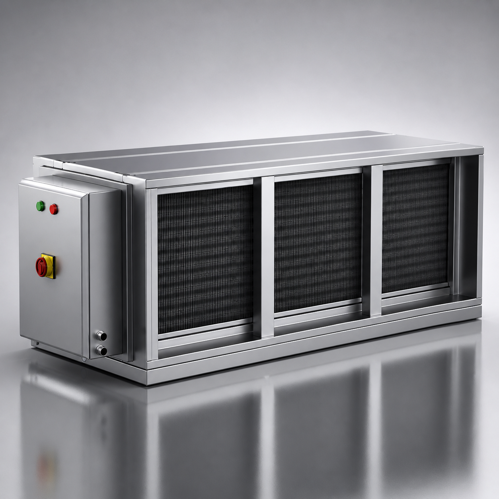
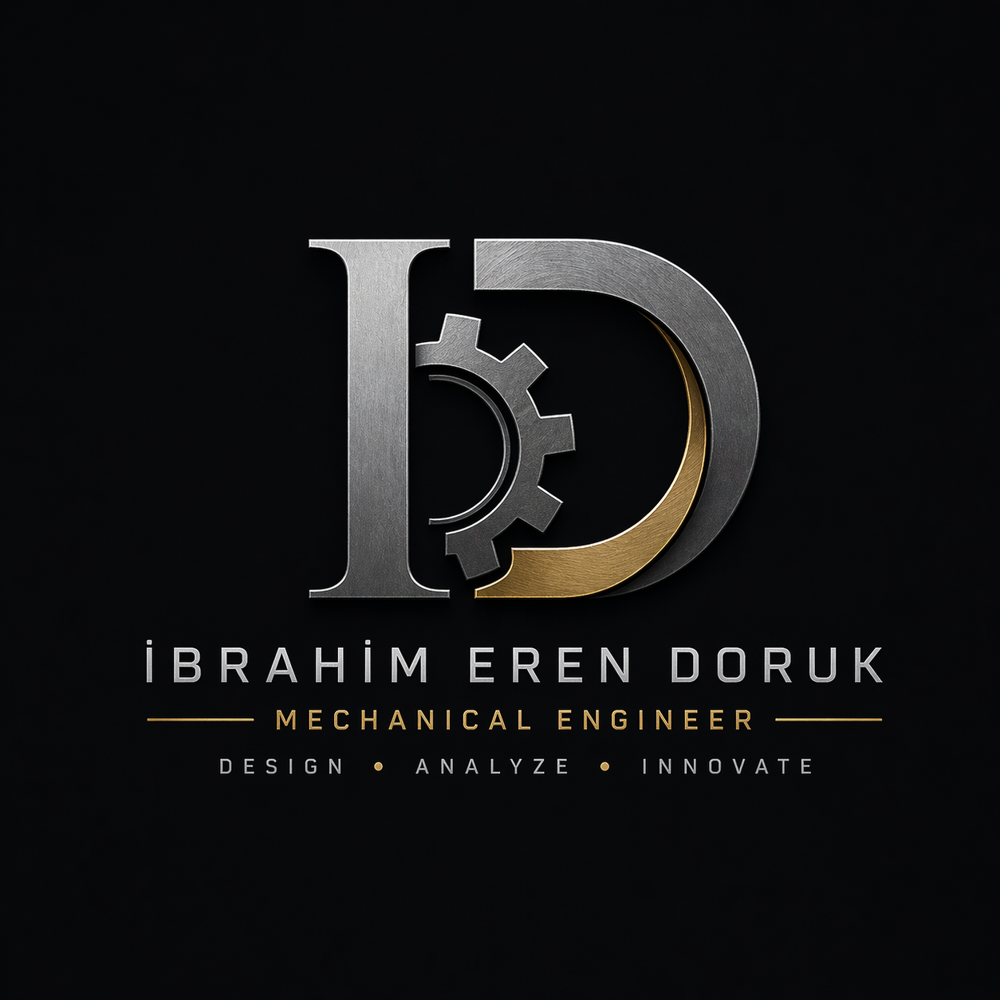
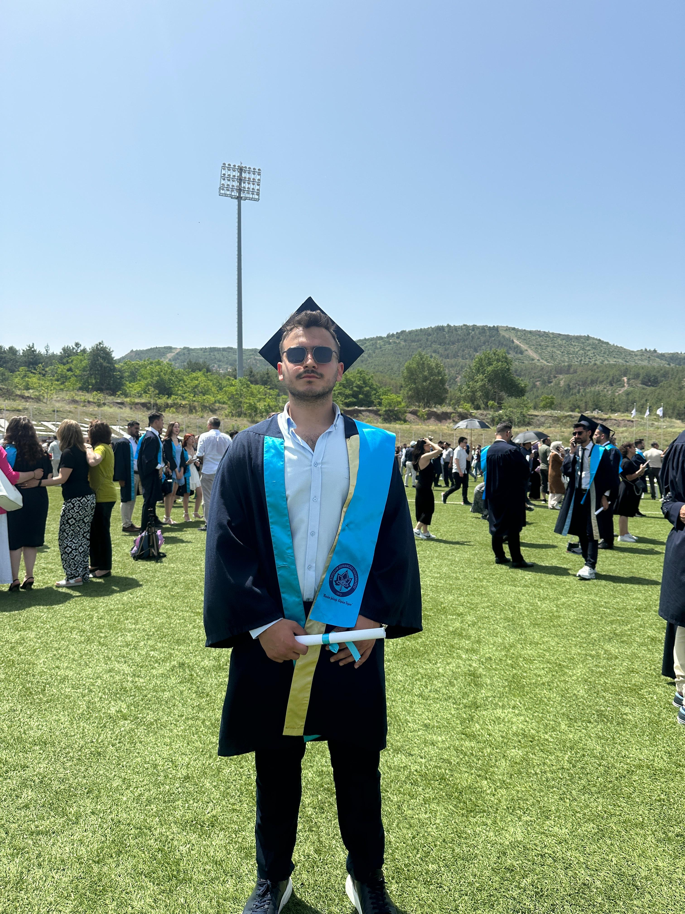
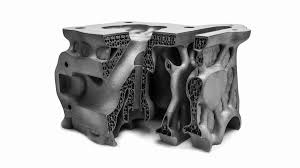
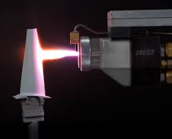
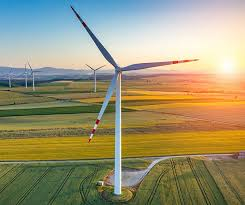

Tasarım ve Render Çalışmaları
CAD modelleme, sac metal tasarımı, prototipleme ve 3D render çalışmalarından oluşan proje seçkisi.






İbrahim Eren DorukEskişehir Osmangazi Üniversitesi Makine Mühendisliği mezunu. CAD/CAM tasarımı, CNC işleme, tolerans analizi, malzeme bilgisi ve kalite kontrol konularında yetkin.

Eskişehir Osmangazi Üniversitesi Makine Mühendisliği bölümünden 2024 yılında mezun oldum. CAD/CAM tasarımı, CNC işleme, tolerans analizi, malzeme bilgisi ve kalite kontrol konularında yetkinlik sahibiyim. Endüstrideki teknolojik yenilikleri yakından takip ederek, mühendislik becerilerimi sürekli geliştiriyor ve yenilikçi çözümler üretmeye odaklanıyorum.
CAD modelleme, sac metal tasarımı, prototipleme ve 3D render çalışmalarından oluşan proje seçkisi.




AISI 316L paslanmaz çeliğin yüzey topolojisi ve mekanik özellikleri üzerine tez çalışması.

Termal bariyer kaplama teknolojileri ve bu teknolojilerin faydaları hakkında araştırma.

Türkiye’nin rüzgar enerjisi potansiyeli ve rüzgar türbinleri üzerine rapor çalışması.
Sac metal parçalar için profesyonel CAD tasarımı, teknik resim, büküm ve üretim hazırlığı.
PLA, ABS, PETG gibi malzemelerde prototip ve fonksiyonel parça üretimi.
Fikirden fiziksel ürüne kadar modelleme, 3D baskı ve test süreci.
SolidWorks, Autodesk Fusion, Siemens NX ve Siemens NX Manufacturing ile tasarım ve CAM çalışmaları.
CNC freze, lazer kesim, abkant pres, kaynaklı imalat, kalite kontrol ve tolerans analizi.
Malzeme bilgisi, termal analiz, yüzey topolojisi ve üretim süreçleri optimizasyonu.
PSM Plaster Systems / Ümraniye, İstanbul
Üretim süreçleri, kalite kontrol, montaj operasyonları, stok yönetimi ve CAD/CAM destekli tasarım çalışmalarında görev aldım.
ESAYSAN Endüstriyel Metal Ürünleri / Odunpazarı, Eskişehir
Talaşsız imalat, lazer kesim, abkant pres, kaynaklı imalat, Ar-Ge ve kalite kontrol süreçlerinde aktif olarak yer aldım.
GPS Makine / Hacılar, Kayseri
CAD/CAM programları, CNC freze kullanımı, 3 boyutlu parça tasarımı ve kalite kontrol çalışmalarında deneyim kazandım.
Eskişehir Osmangazi Üniversitesi
Türbin motoru tasarımı, termal analiz, imalat ve kalite kontrol alanlarında eğitim.
Hidrojen yakıtlı ve elektrikli araçlar hakkında teknik bilgiler edinilen eğitim programı.
Üretim süreçlerinde verimlilik ve israf azaltma teknikleri üzerine eğitim.
Sac metal parçaların tasarımı, katlama analizi ve üretim hazırlığı üzerine eğitim.
Benimle proje, tasarım veya üretim çalışmaları için iletişime geçebilirsiniz.